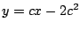
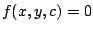
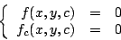
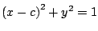
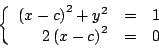
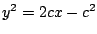

|
|
|
|
|Instituto Tecnológico de Costa Rica|Escuela de Matemática| M. Sc. Geovanni Figueroa M. |
|
|
Soluciones singulares
Ejemplo
No es difícil comprobar que ambas son solución de la ecuación diferencial dada. En la figura 3 se muestra la solución singular y varias soluciones particulares.
Figura 3
Observe que la parábola es tangente en cada uno de sus puntos a una curva de la familia de rectas , cuando sucede esto decimos que la parábola es la envolvente de la familia de rectas ; como se indica en la siguiente definición.
La envolvente de una familia de curvas  satisface el sistema

lo cual nos permite hallarla.
Ejemplo Para hallar la envolvente de la familia de circunferencias , resolvemos el sistema

obteniendo que
Figura 4
Ejemplo
La familia de parábolas  es la solución general
de la ecuación diferencial
Fácilmente se comprueba que ambas son soluciones de ecuación diferencial. En la figura 5 se muestran las soluciones singulares y varias soluciones particulares. Las rectas son la envolvente de la familia de parábolas .
Figura 5
Subsecciones |